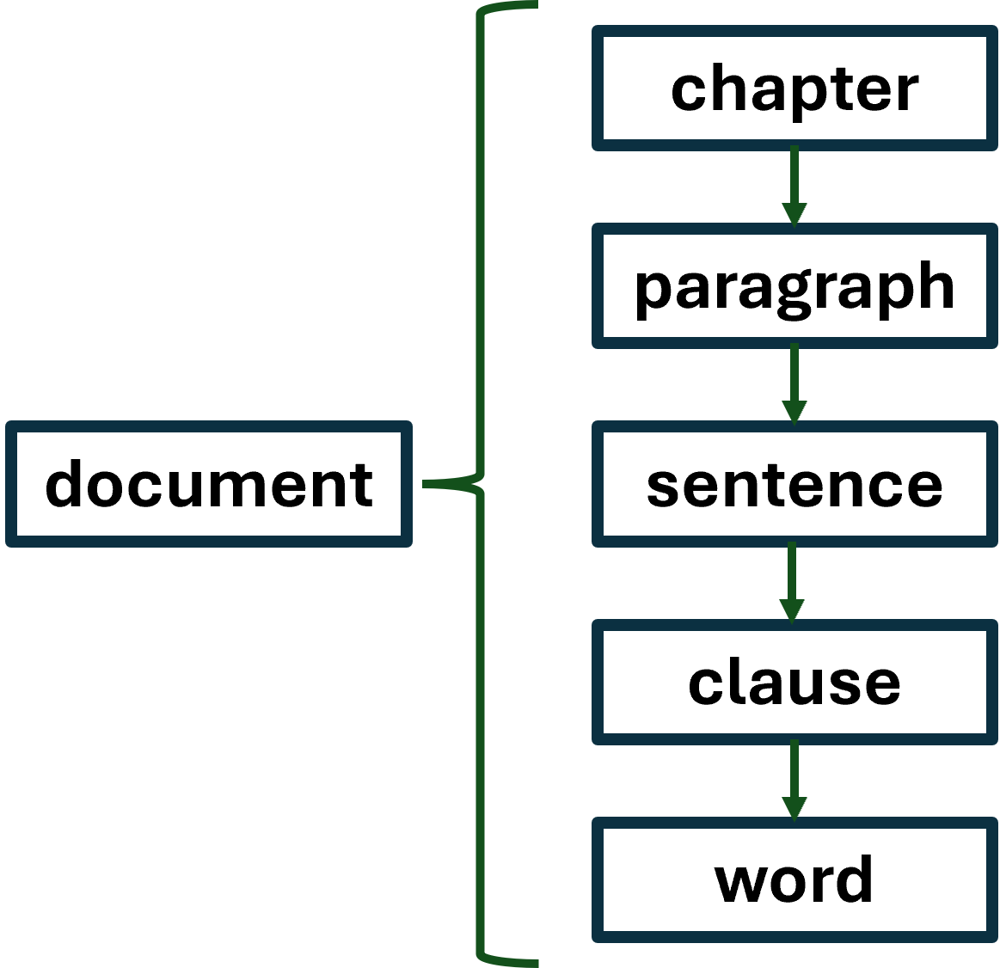
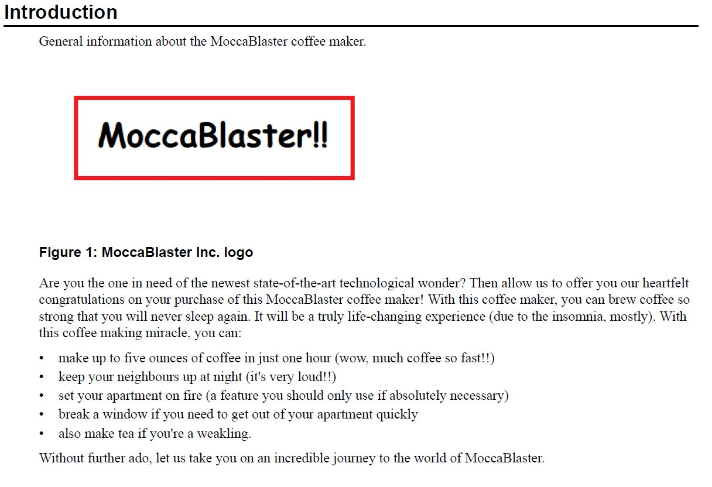
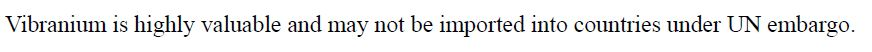
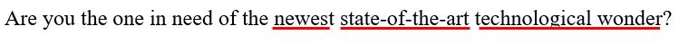

This description of the simplification process of technical texts is based on a process description I created during my first documentation internship. The purpose of this description is to provide a step-by-step structure for the process of simplifying text. Simplification improves the usability of technical texts and should therefore be considered when designing and editing documentation.
Although I primarily discuss the simplification of technical texts, you can use the steps presented here as a reference for editing and improving the readability of different (non-fiction) content.
The theoretical background for this process description is based on
Please note that this process description is based on my personal experiences working with technical documentation. Thus, it is far from conclusive and may contradict your own working methods or preferences as regards editing text. Always consult the style guide assigned to you.
The purpose of the simplification process if to improve the usability of text by making it more readable and comprehensible. To produce text that is easy, quick, and pleasant to read as well as easy to understand, I prefer to divide the editing process into distinct steps. I call this step-by-step division the top-to-bottom method, which is depicted in the figure below.
The top-to-bottom method means that when I edit a document, I progress step-by-step from a higher level of text to a lower one. The levels of text in this model are chapter, paragraph, sentence, clause, and word. I discuss each step separately in the sections below. At the end of each section, there is a list that summarises the key points of the step.
The starting level within a document is the chapter. In structured technical documentation, a chapter is typically a single DITA module: an individual unit that has a title and (textual) content.
The purpose of a chapter is to provide a block of information on a certain topic. Thus, you should make sure that one chapter only deals with one topic and has a logical flow of information. When information is presented in a coherent manner, the reader can proceed through the text smoothly.
Chapters are always headed by titles. In documents, titles typically comprise the table of contents or the bookmarks panel of a PDF document. When users seek information, the titles of chapters are likely the first things they encounter and pay attention to because titles anticipate the content in a section. Therefore, it is important to make sure the title of the chapter matches that of its contents.
To make sure your chapter is readable and provides information efficiently:
In technical documentation, a paragraph can be as short as one clause or consist of several sentences. However, prose is the only genre where the reader is allowed to encounter walls of text
Walls of text are long sections of text with no paragraph breaks. They are exhausting to read, and the mere sight of them can deter readers and discourage engaging with the content. A good rule of thumb is that if you, the writer, don’t want to read a paragraph due to its length, nor will your readers.
The simplest method to deconstruct a wall of text is by adding paragraph breaks. Chopping up massive chunks of text makes the document more approachable as it facilitates skimming.
Whereas simply adding some paragraph breaks may enhance readability, it’s even better to consider alternative means of presentation. This means that whenever you can, you should present content either as a list or table. Lists and tables further increase the approachability and readability of documentation as they are
Another concern as regards paragraphs is the relevance of their contents. One paragraph should only discuss one specific issue or one aspect of a specific issue. Additionally, you should remove any repetitive or irrelevant sentences from the text altogether.
To achieve optimal paragraph structure:
Similarly to paragraphs, sentences should not be overly long. If a sentence is very long, the reader will have forgotten where it began once they reach the end. As a result, the reader has to read the sentence several times, which reduces the efficiency of the text.
The STE recommends that sentences in English technical documentation be no longer than 25 words. Whereas the act of counting the words in a sentence can occasionally be helpful, it is better to focus on the content and message of the sentence. If you can’t shorten a sentence without it losing its meaning, just leave it! An occasional 30-word sentence is not detrimental to the text as long as they don’t become the norm.
In order to shorten long sentences, you can
Another way to make sentences more readable is to focus on the order in which information is presented. New information is typically placed towards the end of a sentence. This way, the reader can continue to build up on the things she already knows.
To formulate comprehensible sentences, complete the steps that follow:
The editing of clauses shares some similarities with the editing of sentences, such as placing new information at the end of a clause. I wouldn’t say you should complete these two phases separately, but for clarity, I discuss them separately here.
In my view, the editing of clauses focuses primarily on their syntactic properties, such as
As regards noun phrases (NPs), the property to focus on is their length. According to the STE, NPs should not be longer than three words; the longer the NP in a clause is, the more difficult the clause is to understand. Try to omit any unnecessary modifiers or rephrase the clause so that you don’t have to use a long NP.
Another syntactic aspect which improves readability is the use of the active voice. The active voice is preferable to the passive voice because the subject constituent of the clause (the agent) is transparent. Thus, there is no question of who or what the subject is, which reduces overall ambiguity. The reader doesn’t have to guess who does what, which is a particularly relevant quality in an operative text.
Additionally, clauses should have the typical English word order of subject-verb-object (SVO), which is often achieved by using the active voice. Using the proper word order helps produce clauses that are understandable, meaningful, and grammatically correct.
Finally, you should make sure that in each clause, the subject constituent agrees grammatically with the predicate verb. In simple terms, this means that if the subject is in plural form, the verb is also in plural form. Especially in the case of very long NPs, the proper form of the verb may be difficult to determine – another aspect positively affected by opting for short subject NPs!
To make your clauses more readable:
The final level of text in the top-to-bottom approach is the word. As regards word choices, you should refer to an appropriate style guide, be it the STE specification or a company-specific style guide. The style guide in use in your company is the best tool for ensuring that you use appropriate language.
Some general pointers for word choices include using
Firstly, one should use words that are common and therefore more likely familiar to the reader. This can mean favouring Germanic-based words instead of Latin or French-based ones. The former are often shorter and more to the point whereas the latter are longer and therefore more complex-looking.
For the sake of clarity, it is also important to avoid unnecessary jargon. User documentation is typically not intended for subject matter experts to use. Instead, the user group may include people who are completely unfamiliar with the field’s specialised language. Users do not want or need to spend time making sense of content that they can’t understand. It is the writer’s responsibility to take the potential readers into account and produce language that is appropriate for their level of expertise.
Sometimes, however, it may be difficult to distinguish jargon from terms that are common, field-specific yet complex-looking. In such cases, it can be useful to ask for advice from a colleague or an SME. Sometimes a simple Google query can reveal whether the word is commonly used when discussing the subject matter in question. You should, however, first and foremost try to determine whether the term is comprehensible to the readers.
Additionally, the words and terms in documentation should be ones that have the least ambiguity in the surrounding context. Because the primary function of operative texts is to instruct readers to do something, the words should be as clear and transparent as possible.
The final point is to use verbs instead of nominalisations. Nominalisations are nouns created from adjectives or verbs, such as to nominalise → nominalisation or to operate → operating. Avoiding nominalisations is not always easy or even possible, but a useful guideline is to replace them with verbs whenever possible.
To ensure you make optimal word choices: